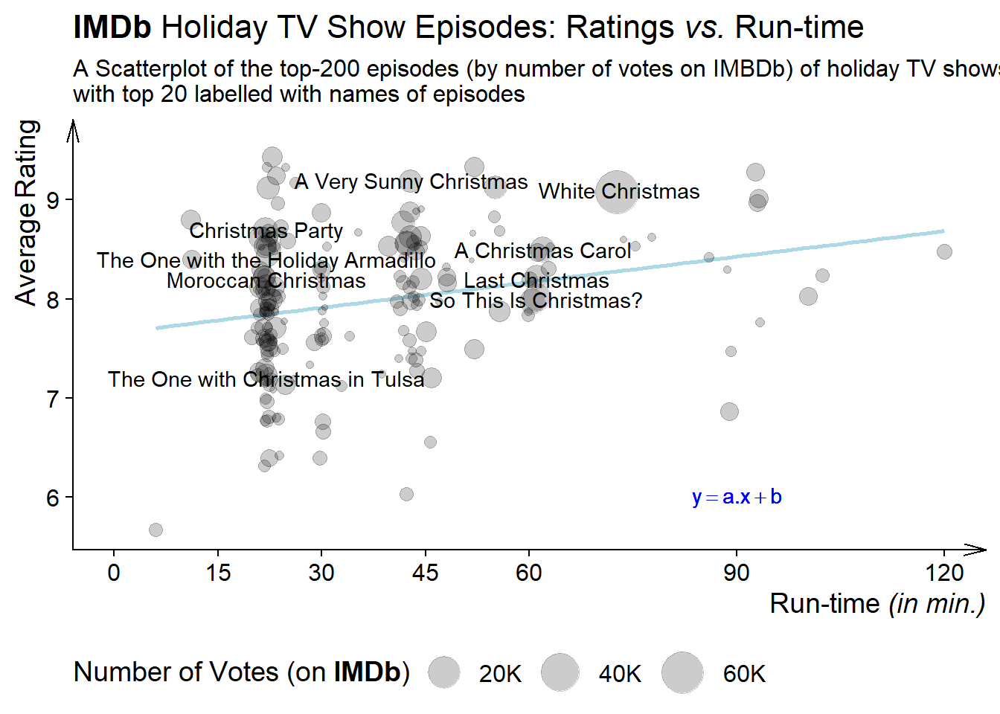
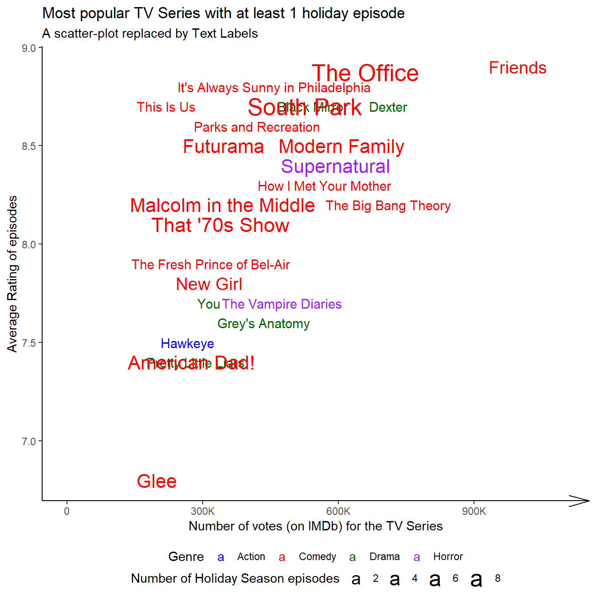
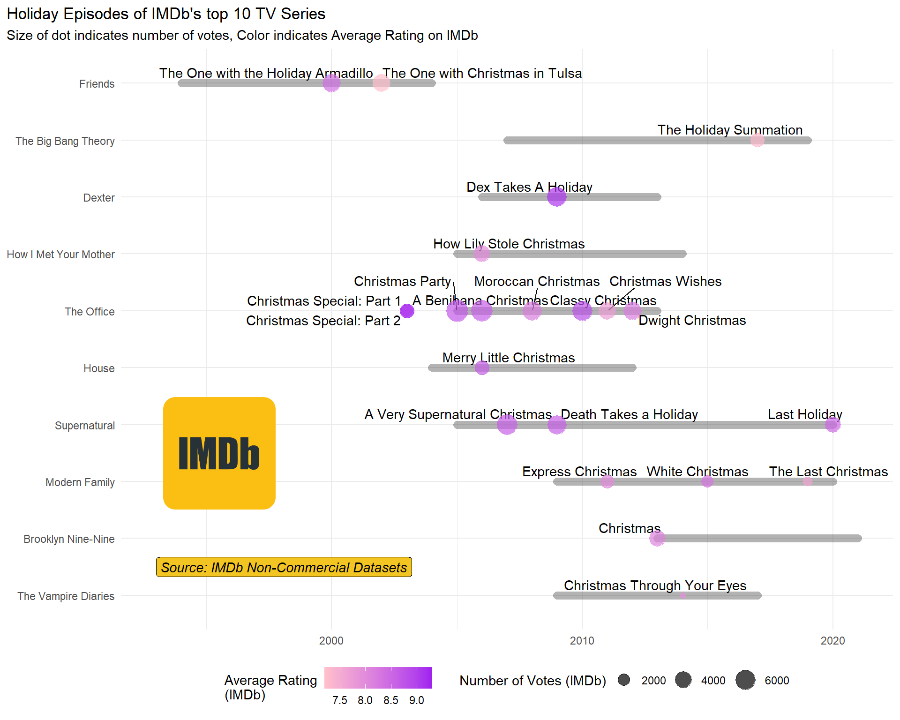
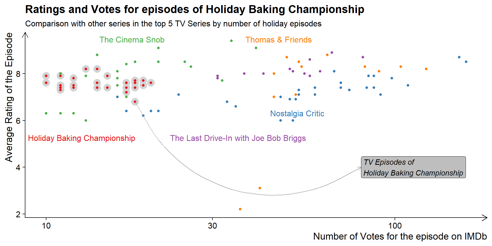
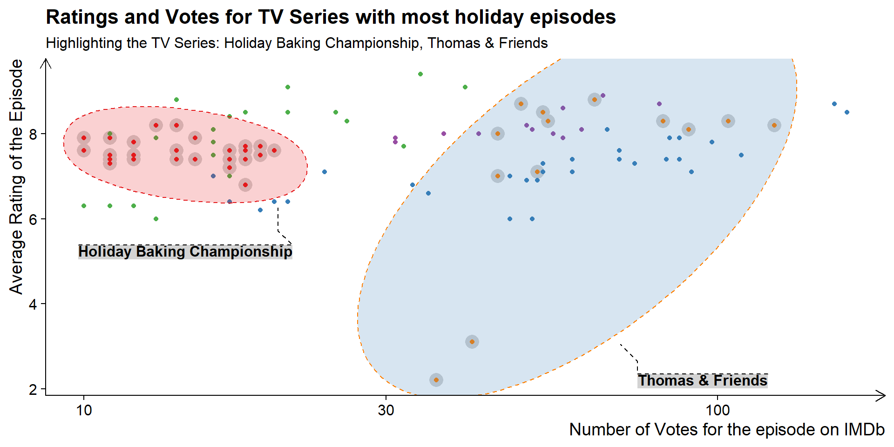
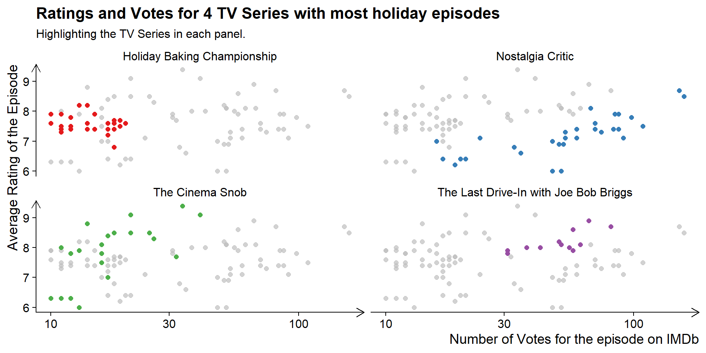

This Chapter has no exercises. So, we explore annotations and packages using Holiday Episodes data from #TidyTuesday All code is annotated to explain the steps.
# Pipe the 'holep' dataframe through a series of operations using the magrittr pipe operator %>%holep|># Select the first 5 rows for top 5 highest votes received TV episodesslice_max(num_votes, n =5)|># Create a gt tablegt()|># Label columns using janitor::make_clean_names functioncols_label_with(fn =~janitor::make_clean_names(., case ="title"))|># Apply styling to the table cells to make the text smalltab_style( style =cell_text(size ="small"), locations =cells_body())|># Apply the gt theme from gtExtras packagegtExtras::gt_theme_nytimes()
Tconst
Parent Tconst
Season Number
Episode Number
Primary Title
Original Title
Year
Runtime Minutes
Genres
Simple Title
Average Rating
Num Votes
Parent Title Type
Parent Primary Title
Parent Original Title
Parent Start Year
Parent End Year
Parent Runtime Minutes
Parent Genres
Parent Simple Title
Parent Average Rating
Parent Num Votes
Christmas
Hanukkah
Kwanzaa
Holiday
tt3973198
tt2085059
2
4
White Christmas
White Christmas
2014
73
Drama,Mystery,Sci-Fi
white christmas
9.1
66843
tvSeries
Black Mirror
Black Mirror
2011
NA
60
Drama,Mystery,Sci-Fi
black mirror
8.7
620664
TRUE
FALSE
FALSE
FALSE
tt10166582
tt10160804
1
6
So This Is Christmas?
So This Is Christmas?
2021
61
Action,Adventure,Crime
so this is christmas
8.0
11460
tvMiniSeries
Hawkeye
Hawkeye
2021
2021
339
Action,Adventure,Crime
hawkeye
7.5
206915
TRUE
FALSE
FALSE
FALSE
tt1672218
tt0436992
6
0
A Christmas Carol
A Christmas Carol
2010
62
Adventure,Drama,Sci-Fi
a christmas carol
8.5
8109
tvSeries
Doctor Who
Doctor Who
2005
NA
45
Adventure,Drama,Sci-Fi
doctor who
8.6
239270
TRUE
FALSE
FALSE
FALSE
tt0562994
tt0436992
2
0
The Christmas Invasion
The Christmas Invasion
2005
60
Adventure,Drama,Sci-Fi
the christmas invasion
8.0
8089
tvSeries
Doctor Who
Doctor Who
2005
NA
45
Adventure,Drama,Sci-Fi
doctor who
8.6
239270
TRUE
FALSE
FALSE
FALSE
tt0664513
tt0386676
2
10
Christmas Party
Christmas Party
2005
22
Comedy
christmas party
8.7
7369
tvSeries
The Office
The Office
2005
2013
22
Comedy
the office
9.0
680216
TRUE
FALSE
FALSE
FALSE
8.1 Plot and axis titles
Code
# Pipe the 'holep' dataframe through a series of operations using the magrittr pipe operator %>%holep|># Select the top 200 rows based on the 'num_votes' columnslice_max(order_by =num_votes, n =200)|># Arrange the data in descending order of 'num_votes'arrange(desc(num_votes))|># Add new columns: 'id' (row number) and # 'primary_title' (conditional labeling)mutate( id =row_number(), primary_title =if_else(id<=20,primary_title,NA))|># Create a ggplot scatterplotggplot(aes(x =runtime_minutes, y =average_rating))+geom_smooth(method ="lm", col ="lightblue", se =FALSE)+geom_jitter(aes(size =num_votes), alpha =0.2)+geom_text(aes(label =primary_title), check_overlap =TRUE, col ="black")+# Customize axis scales and size scalescale_x_continuous(breaks =c(0, 15, 30, 45, 60, 90, 120), limits =c(0, 120))+scale_size_continuous(range =c(1, 10), labels =scales::label_number_si(), trans ="sqrt")+# Set themes for the plotcowplot::theme_half_open()+theme( legend.position ="bottom", legend.direction ="horizontal", axis.title.x =element_markdown(hjust =1), axis.title.y =element_markdown(hjust =1), plot.title =element_markdown(face ="plain"), legend.title =element_markdown(), axis.line =element_line(arrow =arrow(angle =15, length =unit(4, "mm"))))+# Add labels and annotationslabs( x ="Run-time *(in min.)*", y ="Average Rating", size ="Number of Votes (on **IMDb**)", title ="**IMDb** Holiday TV Show Episodes: Ratings _vs._ Run-time", subtitle ="A Scatterplot of the top-200 episodes (by number of votes on IMBDb) of holiday TV shows,\nwith top 20 labelled with names of episodes")+annotate( geom ="text", label =quote(y==a.x+b), x =90, y =6, col ="blue", fontface ="italic")

Figure 1: Scatterplot of TV Episodes Ratings vs. Runtime - demonstrating ‘labs’ of ggplot2 - markdown elements
8.2 Text labels
Code
# Pipe the 'holep' dataframe through a series of operations using the magrittr pipe operator %>%holep|># Group the data by 'parent_primary_title'group_by(parent_primary_title)|># Summarize the data: count of episodes, mean votes, mean ratings, and concatenate unique genressummarise( n =n(), votes =mean(parent_num_votes), ratings =mean(parent_average_rating), genre =paste(unique(genres), collapse =","))|># Select the top 40 rows based on 'votes'slice_max(order_by =votes, n =40)|># Arrange the data in descending order of 'votes'arrange(desc(votes))|># Add a new column 'gen_col' based on genre classificationmutate(gen_col =case_when(str_detect(genre, "Comedy")~"Comedy",str_detect(genre, "Horror")~"Horror",str_detect(genre, "Action")~"Action",str_detect(genre, "Drama")~"Drama", .default ="Others"))|># Create a ggplot scatterplotggplot(aes(x =votes, y =ratings, size =n, label =parent_primary_title, color =gen_col))+geom_text(check_overlap =TRUE, hjust ="inward")+# Customize labels, titles, and scaleslabs( x ="Number of votes (on IMDb) for the TV Series", y ="Average Rating of episodes", size ="Number of Holiday Season episodes", color ="Genre", title ="Most popular TV Series with at least 1 holiday episode", subtitle ="A scatter-plot replaced by Text Labels")+scale_size_continuous(range =c(4, 7))+scale_x_continuous(labels =scales::label_number_si(), limits =c(0, 1100000))+scale_color_manual(values =c("blue", "red", "darkgreen", "purple"))+# Set themes for the plottheme_classic()+theme( legend.position ="bottom", legend.box ="vertical", legend.margin =margin(0, 0, 0, 0), legend.spacing =unit(0, "pt"), axis.line.x =element_line(arrow =arrow(angle =15)))

Figure 2: Demonstrating the use of Text Labels in place of points in a scatterplot
8.3 Building custom annotations
Code
# IMDb logo image for annotation in the plotimg<-image_read("https://cdn4.iconfinder.com/data/icons/logos-and-brands/512/171_Imdb_logo_logos-512.png")# Extract the top 10 TV series with at least 1 holiday episode based on IMDb votestv10<-holep|>group_by(parent_tconst, parent_primary_title)|>summarise( start =mean(parent_start_year, na.rm =TRUE), end =mean(parent_end_year, na.rm =TRUE), votes =mean(parent_num_votes, na.rm =TRUE), runtime =mean(parent_runtime_minutes, na.rm =TRUE), rating =mean(parent_average_rating, na.rm =TRUE), num_episodes =n())|>ungroup()|>mutate(years =end-start)|>drop_na()|>slice_max(order_by =votes, n =10)# Filter the 'holep' dataframe to see only the holiday episodes of the top 10 seriesholep|>filter(parent_primary_title%in%(tv10|>pull(parent_primary_title)))|>mutate( parent_primary_title =fct(parent_primary_title, levels =(tv10|>pull(parent_primary_title))))|># Create a ggplot scatterplotggplot(aes(x =year, y =fct_rev(parent_primary_title)))+ggrepel::geom_text_repel(aes(label =primary_title), vjust =+1)+geom_segment( data =tv10,aes(x =start, xend =end, y =parent_primary_title, yend =parent_primary_title), alpha =0.3, lineend ="round", lwd =3)+geom_point(aes(color =average_rating, size =num_votes), alpha =0.7)+# Customize labels, titles, and scaleslabs( x =NULL, y =NULL, title ="Holiday Episodes of IMDb's top 10 TV Series", subtitle ="Size of dot indicates number of votes, Color indicates Average Rating on IMDb", colour ="Average Rating\n(IMDb)", size ="Number of Votes (IMDb)")+scale_color_gradient(low ="pink", high ="purple")+scale_size_continuous(range =c(2, 8))+theme_minimal()+theme( legend.position ="bottom", plot.title.position ="plot")+annotate( geom ="label", x =1993, y =1.5, label ="Source: IMDb Non-Commercial Datasets", fontface ="italic", hjust =0, fill ="#f2c522")+annotation_custom( grob =grid::rasterGrob(img), xmin =1993, xmax =1998, ymin =2, ymax =5)

Figure 3: Text Annotations within a plot’s panel area
Building a Visualization with Image annotations on the y-axis
An attempt to make a nice visualization with annotations for #TidyTuesday: —
Code
#==============================================================================## Libraries --------------------------------------------------------------------#==============================================================================#library(tidyverse)# Data Wrangling and Plottinglibrary(here)# Files location and loadinglibrary(summarytools)# Exploratory Data Analysislibrary(colorfindr)# To get colour palettes for the Vizlibrary(showtext)# Using Fonts More Easily in R Graphslibrary(ggimage)# Using Images in ggplot2library(fontawesome)# Social Media iconslibrary(ggtext)# Markdown Text in ggplot2library(patchwork)# For compiling plotslibrary(figpatch)# Images in patchworklibrary(magick)# Work with Images and Logoslibrary(ggimage)# Background Imagelibrary(cropcircles)# Crop Imageslibrary(cowplot)# Images on axis ticks#==============================================================================## Data Load-in------------------------------------------------------------------#==============================================================================#tuesdata<-tidytuesdayR::tt_load('2023-12-19')holep<-tuesdata$holiday_episodesrm(tuesdata)#==============================================================================## Data Wrangling----------------------------------------------------------------#==============================================================================## Find Top 10 series of IMDbtv10<-holep|>group_by(parent_tconst, parent_primary_title)|>summarise( start =mean(parent_start_year, na.rm =TRUE), end =mean(parent_end_year, na.rm =TRUE), votes =mean(parent_num_votes, na.rm =TRUE), runtime =mean(parent_runtime_minutes, na.rm =TRUE), rating =mean(parent_average_rating, na.rm =TRUE), num_episodes =n())|>ungroup()|>mutate(years =end-start)|>drop_na()|>slice_max(order_by =votes, n =10)# The Actual Data to be plotteddf<-holep|># See only the holiday episodes of top 10 seriesfilter(parent_primary_title%in%(tv10|>pull(parent_primary_title)))|># An ordered factor to display TV Series Ranking wise in the plotmutate( parent_primary_title =fct(parent_primary_title, levels =(tv10|>pull(parent_primary_title))))#==============================================================================## Options & Visualization Parameters--------------------------------------------#==============================================================================## Load fontsfont_add_google("Ubuntu Condensed", family ="title_font")# Font for titlesfont_add_google("Saira Extra Condensed", family ="caption_font")# Font for the captionfont_add_google("Exo", family ="body_font")# Font for plot textshowtext_auto()# Creating Images for 10 Series Titles# Image to extractimg<-""# Color Palettelibrary(MetBrewer)MetBrewer::display_all()mypal<-met.brewer("Tam")# Define colourslow_col<-mypal[2]# Heat map: low colourhi_col<-mypal[5]# Heat map: high colourbg_col<-"white"# Background Colourtext_col<-mypal[8]# Colour for the texttext_hil<-mypal[7]# Colour for highlighted text# Define Text Sizets=24# Text Size# Caption stuffsysfonts::font_add(family ="Font Awesome 6 Brands", regular =here::here("docs", "Font Awesome 6 Brands-Regular-400.otf"))github<-""github_username<-"aditya-dahiya"xtwitter<-""xtwitter_username<-"@adityadahiyaias"linkedin<-""linkedin_username<-"dr-aditya-dahiya-ias"social_caption<-glue::glue("<span style='font-family:\"Font Awesome 6 Brands\";'>{github};</span> <span style='color: {text_col}'>{github_username} </span> <span style='font-family:\"Font Awesome 6 Brands\";'>{xtwitter};</span> <span style='color: {text_col}'>{xtwitter_username}</span> <span style='font-family:\"Font Awesome 6 Brands\";'>{linkedin};</span> <span style='color: {text_col}'>{linkedin_username}</span>")# Add text to plot--------------------------------------------------------------plot_title<-"Holiday Episodes of IMDb's top-10 TV Series"subtitle_text<-"The Office had the most (6) holiday season episodes, while the highest rated episode is Dexter's Dex Takes a Holiday."plot_subtitle<-paste(strwrap(subtitle_text, 150), collapse ="\n")plot_caption<-paste0("**Data:** IMDb Non-Commercial Datasets. | ", "**Graphics:** ", social_caption)#==============================================================================## Images for Y-Axis ------------------------------------------------------------#==============================================================================#url1<-"https://www.tvstyleguide.com/wp-content/uploads/2017/05/the_vampire_diaries_logo-1.jpg"url2<-"https://resizing.flixster.com/-XZAfHZM39UwaGJIFWKAE8fS0ak=/v3/t/assets/p9974290_b_h8_ba.jpg"url3<-"https://cdn1.edgedatg.com/aws/v2/abc/ModernFamily/showimages/cae29355a2f177539897e6db1d9b0861/1600x900-Q90_cae29355a2f177539897e6db1d9b0861.jpg"url4<-"https://1000logos.net/wp-content/uploads/2017/07/emblem-Supernatural.jpg"url5<-"https://pics.filmaffinity.com/House_M_D_TV_Series-298794401-large.jpg"url6<-"https://cdn.britannica.com/63/247263-050-3ABF5622/promotional-still-The-Office-Steve-Carell.jpg"url7<-"https://m.media-amazon.com/images/M/MV5BNjg1MDQ5MjQ2N15BMl5BanBnXkFtZTYwNjI5NjA3._V1_FMjpg_UX1000_.jpg"url8<-"https://rukminim2.flixcart.com/image/850/1000/k0zlsi80/poster/f/p/y/medium-dexter-tv-series-poster-for-room-office-13-inch-x-19-inch-original-imafknhcvrnzxfwy.jpeg"url9<-"https://resizing.flixster.com/-XZAfHZM39UwaGJIFWKAE8fS0ak=/v3/t/assets/p185554_b_v9_bk.jpg"url10<-"https://m.media-amazon.com/images/M/MV5BNDVkYjU0MzctMWRmZi00NTkxLTgwZWEtOWVhYjZlYjllYmU4XkEyXkFqcGdeQXVyNTA4NzY1MzY@._V1_.jpg"mk_logo<-function(url){image_read(url)|>image_resize("x300")|>circle_crop(border_size =1, border_colour ="black")|>image_read()}#==============================================================================## Data Visualization------------------------------------------------------------#==============================================================================#p<-df|>ggplot(aes(x =year, y =fct_rev(parent_primary_title)))+ggrepel::geom_text_repel(aes(label =primary_title), family ="body_font", col =mypal[7], size =3, nudge_y =-0.5)+geom_segment( data =tv10,aes(x =start, xend =end, y =parent_primary_title, yend =parent_primary_title), alpha =0.3, lineend ="round", lwd =4, col =mypal[7])+geom_point(aes(color =average_rating, size =num_votes), alpha =0.96)+scale_color_gradient(low =low_col, high =hi_col)+scale_size_continuous(range =c(4, 12), labels =scales::label_number_si())+scale_x_continuous(limits =c(1993, 2023), breaks =seq(1995, 2020, 5), expand =c(0, 0))+theme_minimal()+theme( legend.position ="bottom")+labs(title =plot_title, caption =plot_caption, subtitle =NULL, x =NULL, y =NULL, color ="Episode Rating (IMDb)", size ="Number of Votes (IMDb)")+guides(size =guide_legend(override.aes =list(colour =text_hil)), alpha ="none")+theme( plot.caption =element_textbox(family ="caption_font", hjust =0.5, colour =text_col, size =ts/2), plot.title =element_text(hjust =0.5, size =2*ts, family ="title_font", face ="bold", colour =text_col), plot.subtitle =element_text(hjust =0, size =ts/2, family ="body_font", colour =text_col), plot.background =element_rect(fill =bg_col, color =bg_col, linewidth =0), panel.grid.major.x =element_blank(), panel.grid.minor.x =element_blank(), panel.grid.major.y =element_line(linetype =2), axis.text =element_text(hjust =0.5, size =ts/2, family ="body_font", colour =text_col), legend.title =element_text(family ="body_font", colour =text_col, vjust =0.5), legend.key.height =unit(2, "mm"), legend.text =element_text(family ="body_font", colour =text_col), plot.title.position ="plot", plot.caption.position ="plot")scale_fac=0.9pimage<-axis_canvas(p, axis ="y")+draw_image(mk_logo(url1), y =0.5, scale =scale_fac)+draw_image(mk_logo(url2), y =1.5, scale =scale_fac)+draw_image(mk_logo(url3), y =2.5, scale =scale_fac)+draw_image(mk_logo(url4), y =3.5, scale =scale_fac)+draw_image(mk_logo(url5), y =4.5, scale =scale_fac)+draw_image(mk_logo(url6), y =5.5, scale =scale_fac)+draw_image(mk_logo(url7), y =6.5, scale =scale_fac)+draw_image(mk_logo(url8), y =7.5, scale =scale_fac)+draw_image(mk_logo(url9), y =8.5, scale =scale_fac)+draw_image(mk_logo(url10), y =9.5, scale =scale_fac)# insert the image strip into the plotggdraw(insert_yaxis_grob(p, pimage, position ="left", width =unit(15, "mm")))
library(directlabels)# Top 10 TV Series with most holiday season episodesnames_series<-holep|>count(parent_primary_title, sort =TRUE)|>filter(n>10)|>pull(parent_primary_title)select_name="Holiday Baking Championship"n=5holep|>filter(parent_primary_title%in%names_series[1:n])|>ggplot(aes(x =num_votes, y =average_rating, color =parent_primary_title))+# Background Highlighting of specific seriesgeom_point( data =(holep|>filter(parent_primary_title==select_name)), size =5, color ="lightgrey")+# Plotting all the pointsgeom_point()+# Text Annotation Arrowannotate( geom ="curve", x =(holep|>filter(parent_primary_title==select_name)|>arrange(average_rating)|>slice_head(n =1)|>pull(num_votes)), y =(holep|>filter(parent_primary_title==select_name)|>arrange(average_rating)|>slice_head(n =1)|>pull(average_rating)), xend =80, yend =4, arrow =arrow(length =unit(2, "mm")), col ="darkgrey")+# Text Annotationannotate( geom ="label", x =80, y =4, hjust =0, vjust =0.5, label =paste0("TV Episodes of\n", select_name), fill ="grey", fontface ="italic", label_padding =unit(15, "mm"), label_size =unit(0, "mm"))+# Labels and Titleslabs( x ="Number of Votes for the episode on IMDb", y ="Average Rating of the Episode", title =paste0("Ratings and Votes for episodes of ", select_name), subtitle =paste0("Comparison with other series in the top ", n, " TV Series by number of holiday episodes"))+scale_x_continuous(trans ="log10")+scale_color_brewer(palette ="Set1")+cowplot::theme_half_open()+theme( axis.title =element_text(hjust =1), legend.position ="none", axis.line =element_line(arrow =arrow(length =unit(3, "mm"))))+# Using directlabelsdirectlabels::geom_dl(aes(label =parent_primary_title), method ="smart.grid")

Figure 4: Using directlabels and annotations to make reading the scatterplot easier, instead of a legend
Another example, which uses geom_mark_ellipse() of ggforce package (Pedersen 2022) to focus on specific groups within a scatter-plot. The Figure 5 shows this.
Code
names_highlight=c("Holiday Baking Championship","Thomas & Friends")holep|>filter(parent_primary_title%in%names_series[1:n])|>ggplot(aes(x =num_votes, y =average_rating, color =parent_primary_title))+# Background Highlighting of specific seriesgeom_point( data =(holep|>filter(parent_primary_title%in%names_highlight)), size =5, color ="lightgrey")+# Plotting all the pointsgeom_point()+# Labels and Titleslabs( x ="Number of Votes for the episode on IMDb", y ="Average Rating of the Episode", title =paste0("Ratings and Votes for TV Series with most holiday episodes"), subtitle =paste0("Highlighting the TV Series: ", paste0(names_highlight, collapse =", ")))+ggforce::geom_mark_ellipse( data =(holep|>filter(parent_primary_title%in%names_highlight)),aes(label =parent_primary_title, group =parent_primary_title, fill =parent_primary_title), linetype =2, alpha =0.2, label.margin =margin(0,0,0,0), con.linetype =2, label.fill ="lightgrey")+scale_x_continuous(trans ="log10")+scale_color_brewer(palette ="Set1")+scale_fill_brewer(palette ="Set1")+cowplot::theme_half_open()+theme( axis.title =element_text(hjust =1), legend.position ="none", axis.line =element_line(arrow =arrow(length =unit(3, "mm"))))

Figure 5: Using ellipses to highlight areas of specific groups in a scatterplot
8.5 Annotation across facets
Similarly, using gghighlight package (Yutani 2022), we can annotate different facets in one go, as shown in Figure 6.
Code
holep|>filter(parent_primary_title%in%names_series[1:4])|>ggplot(aes(x =num_votes, y =average_rating, color =parent_primary_title))+# Plotting all the pointsgeom_point(size =2)+# Faceting by TV Seriesfacet_wrap(~parent_primary_title)+# gghighlight to annotategghighlight::gghighlight()+# Labels and Titleslabs( x ="Number of Votes for the episode on IMDb", y ="Average Rating of the Episode", title =paste0("Ratings and Votes for 4 TV Series with most holiday episodes"), subtitle ="Highlighting the TV Series in each panel.")+scale_x_continuous(trans ="log10")+scale_color_brewer(palette ="Set1")+scale_fill_brewer(palette ="Set1")+cowplot::theme_half_open()+theme( axis.title =element_text(hjust =1), legend.position ="none", axis.line =element_line(arrow =arrow(length =unit(3, "mm"))), strip.background =element_rect(fill ="white"))

Figure 6: Annotating different facets by using gghighlight